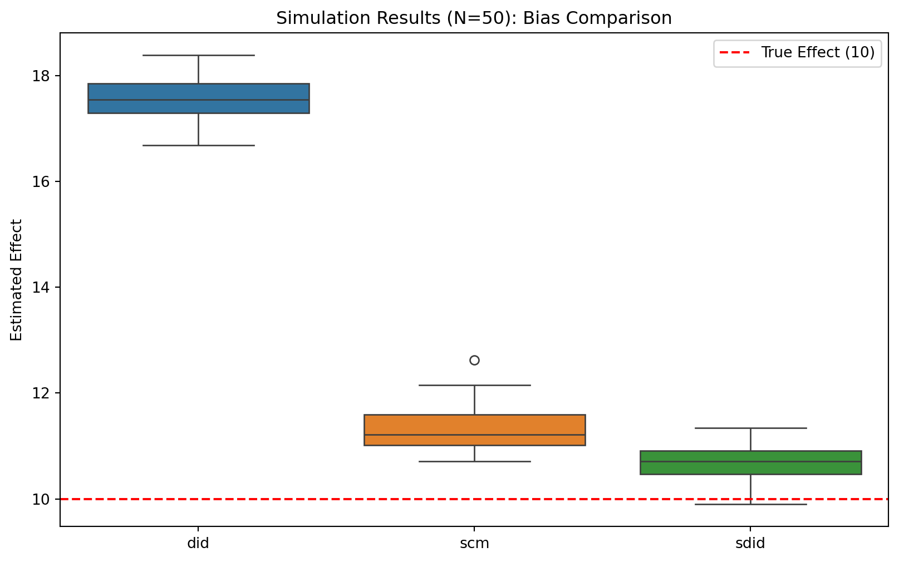
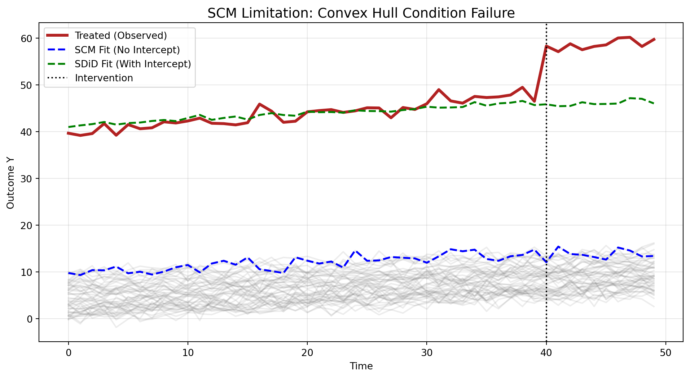

Code
import pandas as pd
import numpy as np
import matplotlib.pyplot as plt
import seaborn as sns
import cvxpy as cp
import statsmodels.api as sm
import statsmodels.formula.api as smf인과 추론(Causal Inference)에서 가장 널리 쓰이는 이중차분법(DiD)은 ’평행 추세 가정(Parallel Trends Assumption)’에 크게 의존합니다.
하지만 현실 데이터에서는 처치군과 대조군의 추세가 평행하지 않은 경우가 많습니다.
이를 보완하기 위해 Synthetic Control Method (SCM)이 등장했지만, SCM 역시 제약이 있습니다.
Synthetic Difference in Differences (SDiD)는 DiD와 SCM의 장점을 결합하여, 평행 추세가 위배되는 상황에서도 더욱 강건한(robust) 추정치를 제공합니다.
이번 포스트에서는 파이썬을 사용하여 SDiD를 직접 구현해보고, 평행 추세가 위배되는 시뮬레이션 데이터를 통해 DiD, SCM과 성능을 비교해 봅니다.
import pandas as pd
import numpy as np
import matplotlib.pyplot as plt
import seaborn as sns
import cvxpy as cp
import statsmodels.api as sm
import statsmodels.formula.api as smfSyntheticDiD 클래스는 처치군(Treated)과 통제군(Control) 데이터를 입력받아, SDiD 추정량을 산출하는 핵심 로직을 담고 있습니다.get_unit_weights(intercept=True) 옵션을 통해 절편을 포함합니다.\[ (\hat{\omega}_0, \hat{\omega}) = \underset{\omega_0, \omega}{\arg\min} \sum_{t=1}^{T_{pre}} \left( Y_{tr,t} - \omega_0 - \sum_{i=1}^{N_{co}} \omega_i Y_{it} \right)^2 + \zeta^2 ||\omega||_2^2 \]
\[ \text{subject to } \sum_{i=1}^{N_{co}} \omega_i = 1, \quad \omega_i \ge 0 \]
\[ (\hat{\lambda}_0, \hat{\lambda}) = \underset{\lambda_0, \lambda}{\arg\min} \sum_{i=1}^{N_{co}} \left( \bar{Y}_{i, post} - \lambda_0 - \sum_{t=1}^{T_{pre}} \lambda_t Y_{it} \right)^2 \]
\[ \text{subject to } \sum_{t=1}^{T_{pre}} \lambda_t = 1, \quad \lambda_t \ge 0 \]
estimate 메서드)\[ \hat{\tau}^{SDiD} = \underbrace{(\bar{Y}_{tr, post} - \bar{Y}_{tr, pre}^{\lambda})}_{\text{Treated Change}} - \underbrace{\sum_{i=1}^{N_{co}} \hat{\omega}_i (\bar{Y}_{i, post} - \bar{Y}_{i, pre}^{\lambda})}_{\text{Synthetic Control Change}} \]
class SyntheticDiD:
def __init__(self, Y_co, Y_tr, T_pre):
self.Y_co = Y_co # Control Data (N_co x T)
self.Y_tr = Y_tr # Treated Data (1 x T)
self.T_pre = T_pre
# Split Pre/Post
self.Y_pre_co = Y_co[:, :T_pre]
self.Y_pre_tr = Y_tr[:, :T_pre]
self.N_co = Y_co.shape[0]
def get_unit_weights(self, zeta=None, intercept=True):
"""
Step 1: Compute Unit Weights (omega)
SDiD Eq: argmin || mean(Y_tr) - (w0 + w @ Y_co) ||^2 + zeta^2 ||w||^2
"""
# Variables
w = cp.Variable(self.N_co)
w0 = cp.Variable(1) if intercept else 0 # SCM은 intercept=False
# Target (Treated Pre-trend)
target = self.Y_pre_tr.flatten()
# Prediction (Weighted Control Pre-trend)
prediction = w0 + w @ self.Y_pre_co
# Regularization (Zeta)
# 논문의 zeta 계산식 간소화 (표준편차 * N_tr 등)
if zeta is None:
# Simple heuristic for tutorial: std of first differences
diffs = np.diff(self.Y_pre_co, axis=1)
sigma = np.std(diffs)
zeta = (self.N_co * (self.Y_co.shape[1] - self.T_pre))**(1/4) * sigma
# Objective Function
error_term = cp.sum_squares(target - prediction)
reg_term = cp.sum_squares(w) * (zeta**2)
objective = cp.Minimize(error_term + reg_term)
# Constraints: Sum to 1, Non-negative (Simplex)
constraints = [cp.sum(w) == 1, w >= 0]
# Solve
prob = cp.Problem(objective, constraints)
prob.solve()
return w.value, (w0.value if intercept else 0)
def get_time_weights(self, lambda_reg=1e-6):
"""
Step 2: Compute Time Weights (lambda)
SDiD Eq: argmin || mean(Y_post_co) - (lam0 + Y_pre_co @ lam) ||^2
"""
T_pre = self.T_pre
lam = cp.Variable(T_pre)
lam0 = cp.Variable(1)
# Target: Control Units' Post-treatment Average (Vector of size N_co)
# 각 Control Unit의 처치 후 평균값
target = np.mean(self.Y_co[:, T_pre:], axis=1)
# Prediction: Weighted sum of Pre-treatment values for each unit
prediction = lam0 + self.Y_pre_co @ lam
# Objective
# Ridge penalty slightly added for numerical stability
objective = cp.Minimize(cp.sum_squares(target - prediction) + lambda_reg * cp.sum_squares(lam))
# Constraints
constraints = [cp.sum(lam) == 1, lam >= 0]
prob = cp.Problem(objective, constraints)
prob.solve()
return lam.value, lam0.value
def estimate(self):
# 1. Unit Weights (SDiD)
self.omega, self.omega0 = self.get_unit_weights(intercept=True)
# 2. Unit Weights (SCM - for comparison)
# SCM: No intercept, No regularization (or small) in classic form, but usually L2 used.
# Here we mimic SCM by forcing intercept=0
self.omega_sc, _ = self.get_unit_weights(intercept=False, zeta=0)
# 3. Time Weights (SDiD)
self.lam, self.lam0 = self.get_time_weights()
# 4. SDiD Estimator (Weighted TWFE)
# 간단한 구현을 위해 Weighted Diff-in-Diff 공식을 직접 적용합니다.
# tau_sdid = (Y_tr_post - Y_tr_pre_weighted) - (Y_co_post_weighted - Y_co_pre_weighted)
# Apply Time Weights to Pre-periods
y_tr_post = np.mean(self.Y_tr[:, self.T_pre:])
y_tr_pre = np.dot(self.Y_tr[:, :self.T_pre].flatten(), self.lam)
# Apply Unit Weights to Control Units
y_co_post_series = np.mean(self.Y_co[:, self.T_pre:], axis=1)
y_co_pre_matrix = self.Y_co[:, :self.T_pre]
# Double Weighted Control
# Control Term = Sum( omega_i * ( Mean_Post_i - Sum(lambda_t * Y_it_pre) ) )
control_term = 0
for i in range(self.N_co):
y_i_post = y_co_post_series[i]
y_i_pre = np.dot(y_co_pre_matrix[i], self.lam)
control_term += self.omega[i] * (y_i_post - y_i_pre)
self.tau_sdid = (y_tr_post - y_tr_pre) - control_term
return self.tau_sdid\[ D_i = 1 \quad \text{if } \gamma_i \text{ is in top } 10\%, \quad \text{else } 0 \]
def generate_nonparallel_data(N=100, T=50, T_pre=40, treated_ratio=0.1, true_tau=10, seed=None):
if seed: np.random.seed(seed)
# 1. Fixed Effects
alpha = np.random.normal(0, 5, size=N) # Unit FE
beta = np.random.normal(0, 5, size=T) + np.linspace(0, 10, T) # Time FE (Trend)
# 2. Latent Factor (Time-varying Confounder) causing Non-parallel trends
# 시간(t)에 따라 증가하는 패턴 (Trend Factor)
f_t = np.linspace(0, 15, T)
# 유닛별 민감도 (Loadings)
# 처치군이 될 확률이 높은 유닛들이 더 가파른 기울기를 갖도록 설정
gamma = np.random.uniform(0, 2, size=N)
# 3. Treatment Assignment (Selection on Trends)
# gamma(기울기)가 큰 상위 유닛들을 처치군으로 선정 -> 평행 추세 위배
N_tr = int(N * treated_ratio)
treated_indices = np.argsort(gamma)[-N_tr:]
is_treated = np.zeros(N, dtype=bool)
is_treated[treated_indices] = True
# 4. Generate Outcome Y
Y = np.zeros((N, T))
for i in range(N):
for t in range(T):
# Base Model
y_val = alpha[i] + beta[t] + gamma[i] * f_t[t] + np.random.normal(0, 1)
# Add Treatment Effect
if is_treated[i] and t >= T_pre:
y_val += true_tau
Y[i, t] = y_val
# Prepare Output
# 처치군 데이터를 맨 뒤로 보내거나 인덱스를 반환해야 하지만,
# 여기서는 편의상 SyntheticDiD 클래스 입력 형식에 맞춰 정리
# Sort: Control first, Treated last
sorted_idx = np.concatenate([np.where(~is_treated)[0], np.where(is_treated)[0]])
Y_sorted = Y[sorted_idx, :]
# Split
N_co = N - N_tr
Y_co = Y_sorted[:N_co, :]
# SDiD 클래스는 현재 1개의 Treated Unit을 가정하므로, 평균을 내서 1개로 만듭니다.
Y_tr = np.mean(Y_sorted[N_co:, :], axis=0).reshape(1, -1)
return Y_co, Y_tr, true_tau# -------------------------------------------------------
# 1. 단일 시뮬레이션 데이터 생성
# -------------------------------------------------------
Y_co, Y_tr, true_tau = generate_nonparallel_data(seed=42, N=100, treated_ratio=0.1)
T_pre = 40
time_axis = np.arange(Y_co.shape[1])
# -------------------------------------------------------
# 2. Counterfactuals 계산
# -------------------------------------------------------
# (1) True Counterfactual (Unobserved Truth)
Y_tr_true_cf = Y_tr.flatten().copy()
Y_tr_true_cf[T_pre:] -= true_tau
# (2) Naive DiD Counterfactual (What DiD assumes)
mean_tr_pre = np.mean(Y_tr.flatten()[:T_pre])
mean_co_pre = np.mean(np.mean(Y_co, axis=0)[:T_pre])
level_gap = mean_tr_pre - mean_co_pre
Y_did_naive_cf = np.mean(Y_co, axis=0) + level_gap
# -------------------------------------------------------
# 3. 시각화
# -------------------------------------------------------
plt.figure(figsize=(12, 6))
# (1) Control Units
plt.plot(time_axis, np.mean(Y_co, axis=0), color='navy', linewidth=2, linestyle='--', label='Average Control')
# (2) Treated Unit (Observed)
plt.plot(time_axis, Y_tr.flatten(), color='firebrick', linewidth=3, label='Treated (Observed)')
# (3) True Counterfactual (Unobserved Truth) - RED Dotted
plt.plot(time_axis, Y_tr_true_cf, color='firebrick', linestyle=':', linewidth=2, alpha=0.7, label='True Counterfactual (Target)')
# (4) Naive DiD Counterfactual - GREEN Dashed
plt.plot(time_axis, Y_did_naive_cf, color='green', linestyle='--', linewidth=2, label='Naive DiD Counterfactual (Biased)')
# Settings
plt.axvline(x=T_pre, color='black', linestyle='-', label='Intervention')
plt.title("Why DiD Fails: True Counterfactual vs Naive DiD Projection", fontsize=14)
plt.xlabel("Time")
plt.ylabel("Outcome Y")
plt.legend(loc='upper left')
plt.grid(True, alpha=0.3)
plt.show()
generate_data)와 SyntheticDiD 클래스를 사용하여 몬테카를로 시뮬레이션을 수행합니다.# -------------------------------------------------------
# Simulation Run
# -------------------------------------------------------
N_SIMULATIONS = 50
results = {'did': [], 'scm': [], 'sdid': []}
print(f"Starting Monte Carlo Simulation ({N_SIMULATIONS} runs)...")
for i in range(N_SIMULATIONS):
# 1. Generate Data (Non-parallel trends)
Y_co, Y_tr, true_tau = generate_nonparallel_data(seed=i)
T_pre = 40
# 2. Run Models
model = SyntheticDiD(Y_co, Y_tr, T_pre)
# (1) SDiD
est_sdid = model.estimate()
# (2) SCM (Intercept=False, Zeta=0)
w_scm, _ = model.get_unit_weights(intercept=False, zeta=0)
# SCM Estimator Calculation
y_tr_post = np.mean(Y_tr[:, T_pre:])
y_sc_post = np.mean(w_scm @ Y_co[:, T_pre:])
est_scm = y_tr_post - y_sc_post
# (3) DiD (Simple TWFE)
# Tau = (Tr_post - Tr_pre) - (Co_post - Co_pre)
diff_tr = np.mean(Y_tr[:, T_pre:]) - np.mean(Y_tr[:, :T_pre])
diff_co = np.mean(Y_co[:, T_pre:]) - np.mean(Y_co[:, :T_pre]) # Mean of all controls
est_did = diff_tr - diff_co
# Save
results['sdid'].append(est_sdid)
results['scm'].append(est_scm)
results['did'].append(est_did)
# -------------------------------------------------------
# Result Visualization
# -------------------------------------------------------
df_res = pd.DataFrame(results)
true_tau = 10
plt.figure(figsize=(10, 6))
sns.boxplot(data=df_res)
plt.axhline(y=true_tau, color='r', linestyle='--', label='True Effect (10)')
plt.title(f"Simulation Results (N={N_SIMULATIONS}): Bias Comparison")
plt.ylabel("Estimated Effect")
plt.legend()
plt.show()
# Calculate Metrics
bias = df_res.mean() - true_tau
rmse = np.sqrt(((df_res - true_tau)**2).mean())
print("=== Performance Metrics ===")
print(f"{'Method':<10} | {'Bias':<10} | {'RMSE':<10}")
print("-" * 35)
for method in ['did', 'scm', 'sdid']:
print(f"{method.upper():<10} | {bias[method]:.4f} | {rmse[method]:.4f}")Starting Monte Carlo Simulation (50 runs).../opt/anaconda3/envs/causal-inference-study/lib/python3.9/site-packages/cvxpy/problems/problem.py:1539: UserWarning: Solution may be inaccurate. Try another solver, adjusting the solver settings, or solve with verbose=True for more information.
warnings.warn(
=== Performance Metrics ===
Method | Bias | RMSE
-----------------------------------
DID | 7.5670 | 7.5781
SCM | 1.3289 | 1.3910
SDID | 0.6798 | 0.7493\[ Y_{it} = \underbrace{\alpha_i}_{\text{Unit FE}} + \underbrace{\beta_t}_{\text{Time FE}} + \underbrace{\gamma_i f_t}_{\text{Trend Factor}} + \tau D_{it} + \varepsilon_{it} \]
\[ \alpha_{tr} \gg \max_{j \in Co}(\alpha_j) \quad (\text{Code: } \max + 30) \]
def generate_level_shifted_data(N=50, T=50, T_pre=40, true_tau=10, seed=None):
if seed: np.random.seed(seed)
# 1. Base Components
# Control Units의 Alpha는 작게 설정 (0 ~ 10)
alpha = np.random.uniform(0, 10, size=N)
# Time Trend (Common)
beta = np.linspace(0, 5, T)
# 2. Level Shift (Make Treated Unit an Outlier)
# 처치 유닛의 Alpha를 대조군 최댓값보다 훨씬 크게 설정 (+30)
# -> SCM은 가중치 합이 1이라서 죽었다 깨어나도 이 레벨을 못 맞춤
treated_idx = N - 1 # 마지막 유닛을 처치군으로 지정
alpha[treated_idx] = np.max(alpha[:-1]) + 30
# 3. Non-Parallel Trend Factor (Optional but good for killing DiD too)
# 처치 유닛에게만 추가적인 성장 추세 부여
trend_factor = np.linspace(0, 5, T)
gamma = np.zeros(N)
gamma[treated_idx] = 1.0 # 처치 유닛만 더 가파르게 성장
# 4. Generate Y
Y = np.zeros((N, T))
for i in range(N):
# Y = Alpha + Beta + (Gamma * Trend) + Noise
Y[i, :] = alpha[i] + beta + (gamma[i] * trend_factor) + np.random.normal(0, 1, T)
# Add Treatment Effect (Post-period)
if i == treated_idx:
Y[i, T_pre:] += true_tau
# Output Split
Y_co = Y[:-1, :] # (N-1) x T
Y_tr = Y[-1, :].reshape(1, -1) # 1 x T
return Y_co, Y_tr, true_tauY_co, Y_tr, true_tau = generate_level_shifted_data(seed=42)
T_pre = 40
years = np.arange(50)
# Run Models to get fitted values
model = SyntheticDiD(Y_co, Y_tr, T_pre)
# (1) SCM Fit (Constrained)
w_scm, _ = model.get_unit_weights(intercept=False, zeta=0)
Y_scm_fit = w_scm @ Y_co
# (2) SDiD Fit (Intercept Allowed)
w_sdid, w0_sdid = model.get_unit_weights(intercept=True)
Y_sdid_fit = w0_sdid + w_sdid @ Y_co
plt.figure(figsize=(12, 6))
# Raw Data
plt.plot(years, Y_co.T, color='gray', alpha=0.15)
plt.plot(years, Y_tr.flatten(), color='firebrick', linewidth=3, label='Treated (Observed)')
# SCM Fit (Failure)
plt.plot(years, Y_scm_fit, color='blue', linestyle='--', linewidth=2, label='SCM Fit (No Intercept)')
# SDiD Fit (Success)
plt.plot(years, Y_sdid_fit, color='green', linestyle='--', linewidth=2, label='SDiD Fit (With Intercept)')
plt.axvline(x=T_pre, color='black', linestyle=':', label='Intervention')
plt.title("SCM Limitation: Convex Hull Condition Failure", fontsize=14)
plt.xlabel("Time")
plt.ylabel("Outcome Y")
plt.legend()
plt.grid(True, alpha=0.3)
plt.show()/opt/anaconda3/envs/causal-inference-study/lib/python3.9/site-packages/cvxpy/problems/problem.py:1539: UserWarning: Solution may be inaccurate. Try another solver, adjusting the solver settings, or solve with verbose=True for more information.
warnings.warn(
# -------------------------------------------------------
# Settings
# -------------------------------------------------------
N_SIM = 50
results = {'did': [], 'scm': [], 'sdid': []}
print(f"Starting Level-Shift Simulation ({N_SIM} runs)...")
# -------------------------------------------------------
# Simulation Loop
# -------------------------------------------------------
for i in range(N_SIM):
# 1. Generate Data (Outlier Treated Unit)
Y_co, Y_tr, true_tau = generate_level_shifted_data(seed=i)
T_pre = 40
# 2. Initialize Model
model = SyntheticDiD(Y_co, Y_tr, T_pre)
# (1) SDiD Estimate (Intercept Allowed)
est_sdid = model.estimate()
# (2) SCM Estimate (Intercept False)
w_scm, _ = model.get_unit_weights(intercept=False, zeta=0)
# Counterfactual: w * Y_co (No intercept adjustment)
y_tr_post = np.mean(Y_tr[:, T_pre:])
y_sc_post = np.mean(w_scm @ Y_co[:, T_pre:])
est_scm = y_tr_post - y_sc_post
# (3) DiD Estimate (Standard TWFE)
diff_tr = np.mean(Y_tr[:, T_pre:]) - np.mean(Y_tr[:, :T_pre])
diff_co = np.mean(Y_co[:, T_pre:]) - np.mean(Y_co[:, :T_pre])
est_did = diff_tr - diff_co
# Save
results['sdid'].append(est_sdid)
results['scm'].append(est_scm)
results['did'].append(est_did)
# -------------------------------------------------------
# Visualization
# -------------------------------------------------------
df_res = pd.DataFrame(results)
plt.figure(figsize=(10, 6))
sns.boxplot(data=df_res)
# 참값(True Tau) 표시
plt.axhline(y=true_tau, color='r', linestyle='--', linewidth=2, label=f'True Effect ({true_tau})')
plt.title(f"Simulation Results (N={N_SIM}): Level-Shift & Trend Failure")
plt.ylabel("Estimated Treatment Effect")
plt.xlabel("Method")
plt.legend()
plt.grid(True, alpha=0.3)
plt.show()
# -------------------------------------------------------
# Performance Metrics
# -------------------------------------------------------
bias = df_res.mean() - true_tau
rmse = np.sqrt(((df_res - true_tau)**2).mean())
print("\n=== Performance Metrics (SCM Limitation Scenario) ===")
print(f"{'Method':<10} | {'Bias':<10} | {'RMSE':<10}")
print("-" * 35)
for method in ['did', 'scm', 'sdid']:
print(f"{method.upper():<10} | {bias[method]:.4f} | {rmse[method]:.4f}")Starting Level-Shift Simulation (50 runs)...
=== Performance Metrics (SCM Limitation Scenario) ===
Method | Bias | RMSE
-----------------------------------
DID | 2.5843 | 2.6168
SCM | 34.6187 | 34.6213
SDID | 2.6393 | 2.7111